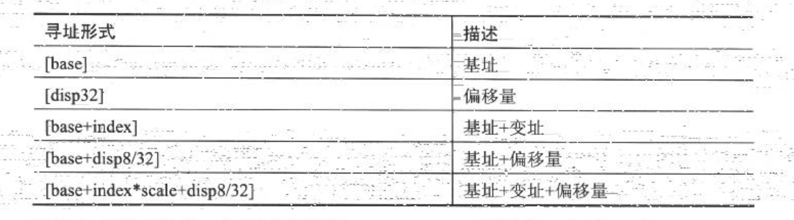
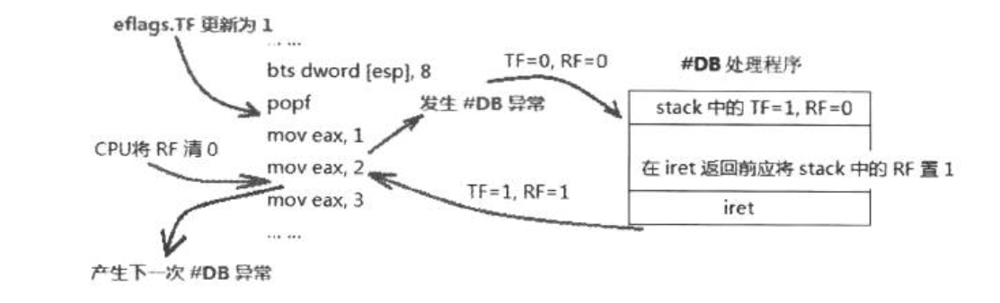
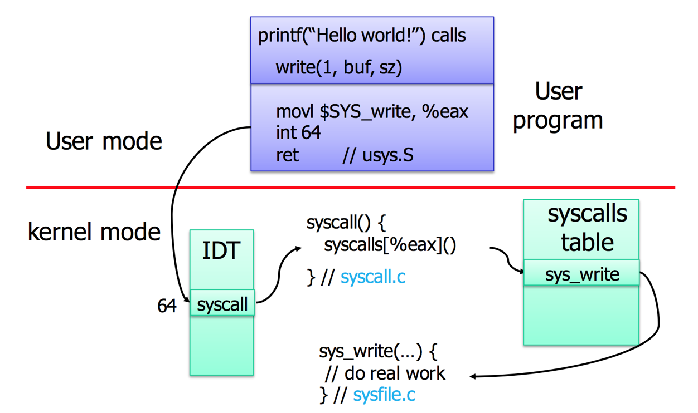
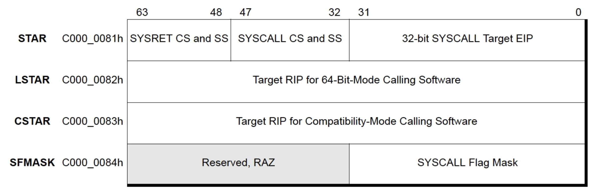

《x86/x64 体系探索及编程》读书笔记
一本在 Intel 手册的基础之上讨论 x86/x64 处理器组成及相关编程方式的书。
第一章 - 数与数据结构
- Page 4x86/x64 体系使用的是“小端序”，即：MSB 对应存储器地址的高位，LSB 对应存储器地址的低位。而在诸如 PowerPC 等 RISC 体系下的某些架构，则可能使用“大端序”。
; MacOS Version.
global _main
section .data
msg: db "It's little-endian based!", 10
foo: dd 0
section .text
exit:
mov rax, 0x02000001
xor rdi, rdi
syscall
_main: ; entry here.
mov dword[rel foo], 1
test byte[rel foo], 1 ; if the LSB is saved in a lower address?
jnz .succeed
call exit
.succeed:
mov rax, 0x02000004
mov rdi, 1
mov rsi, msg
mov rdx, 26
syscall
call exit
- Page 6在 x86/x64 体系中，指令处理数据分为“基础（fundamental）”和“数值（numeric）”两大类。前者包括：byte（8 位）\ word（16 位）\ doubleword（32 位）\ quadword（64 位），它们代表指令能一次性处理的数据宽度。后者主要使用在运算类指令上，包括：
- 整数：包括 unsigned 与 signed 类型；
- 浮点数：包括单精度浮点（1/8/23）、双精度浮点（1/11/52）与扩展双精度浮点（1/15/64）；
- BCD（binary-code decmial integer）：包括 non-packed BCD 码与 packed BCD 码；
- SIMD：单指令多数据流；
Page 7不存在 unsigned 浮点数（IEEE-754 有小数位）。
Page 7在 x86 中，对整数的加减法运算（乘除会在具体指令上进行区分）不会识别 signed 与 unsigned 的区别。而是会同时根据两种情况下的运算结果来修改 eflags 的标志位（比如 OF 与 SF），具体如何解释则由上层程序负责。而 RISC 体系普遍会在指令层上进行假定运算（如 add 与 addu，一个针对 signed，另一个针对 unsigned），部分 x86 体系下的指令也做了区分（如 div 与 idiv）。
Page 9在单精度与双精度浮点数中，“尾数”部分有一个隐式的整数位，该位的值为固定的 “1”。在扩展双精度浮点数中，“尾数”有 64 位，“指数”有 15 位；且其中整数位是显式的，在 “normal（规格化）” 数中，这个位必须为 1。在规格化浮点数中，浮点数的尾数不应当包含前导 0。如果全部用十进制表示，对于类似 “0.0123” 的浮点数，规格化的表示应为 “1.23e-2”。但对于某些过小的数，如 “1.23e-130”，允许的阶数位数不能满足阶数大小的需要（下溢出），这时可能就会在尾数前添加前导 0，如将其表示为 “0.000123e-126”。
Page 10“移码（biased notation）”用来解决浮点数使用 integer 方法进行比较时出现的问题，通过使用 unsigned 值来简化指数的比较过程。
- Biasing is done because exponents have to be signed values in order to be able to represent both tiny and huge values, but two’s complement, the usual representation for signed values, would make comparison harder.
- Page 11在 NASM 中使用浮点数字面量值，分别对应不同的编码方式（__float32__ / __float64__ / __float80e__）：
global _main
section .text
exit:
mov rax, 0x02000001
xor rdi, rdi
syscall
_main: ; entry here.
mov rax, __float32__(0.5)
call exit
- Page 11IEEE-754 其他实数编码格式：

- denormal 数是一个极小的数，接近于 0。其指数部分为 0，尾数部分不为 0；
- 如果一个数超出 infinite，那就是一个 NaN 数。其分为两类：SNaN（Signaling NaN）与 QNaN（Quiet NaN）。前者表示一种比较严重的错误值，一般 FPU 会发出对应的异常信号；后者则通常可以接受（可能针对不同的异常）；
- 不再上述表格中的编码值均为 “unsupported 编码值”。
- Page 17IEEE-754 的四种舍入模式（用于在编码类型转换时舍入尾数部分）：
- round to nearest：四舍五入，且当有两个最接近的可表示的值时首选“偶数”值；
- round down：向负无穷大（向下）舍入；
- round up：向正无穷大（向上）舍入；
- round zero：向 0（截断）舍入。
- Page 17FPU（Float Point Unit）：浮点运算单元。在大多数现代通用计算机架构中，一个或多个浮点运算单元会被集成在 CPU 中。浮点数的计算也会采用独立的寄存器，比如 XMM 寄存器。
- Page 17浮点数中的溢出分为两种：
- 向上溢出：结果值超出了目标格式的最大 normal 值（即 finite 范围外）；
- 向下溢出：结果值超出了目标格式的最小 normal 值（即 tiny 值或 denornal 值）；

- Page 20在 BCD（Binary Coded Decimal）码中，一个十进制数的每一位，使用 8 位的二进制进行编码，如 15 的 BCD 编码为 “15H”。而在 “packed BCD” 中，每个 BCD 数字使用 4 位来表示。x86 下可以使用
aaa指令来将累加器（AX）中的值转换为非压缩的 BCD 码。
第二章 - x86/x64 编程基础
- Page 24C 语言不能直接转换为机器语言，要先由 C 编译器编译出汇编代码，然后再由汇编器生成机器指令，最终再由链接器将这些变量的地址定下来（符号重定位）。

- Page 24x86 机器是 CISC 体系，指令的长度不是固定的。其中最短的指令 1 字节，最长的指令 15 字节。
- Page 26C 语言中的 __stdcall 与 __cdecl 调用规范会使用栈来传递参数，而使用寄存器来传递参数能获得更高的效率。
- Page 27“段内调用”（Near Call，即对 cs 寄存器当前指向的段中过程的调用）的几种形式：
- call puts：目标地址距 IP 偏移量；
- call ax：寄存器操作数；
- call word[puts_pointer]：内存操作数。
- Page 30Canonical 地址：即 x64 体系下的高 16 位作为符号扩展位，仅使用低 48 位寻址的地址形式。
- Page 32x64 寻址模式：

- 基址和变址可以是通用寄存器，displacement 的值是 8/32 位；
- [rip + disp32]：x64 新增的 RIP-Relative 寻址模式，地址值依赖于当前 RIP 的值。该模式易于构造 PIC 代码结构。
- 如
mov rax, [rel table]。
- 如
- Page 35x86 编程可用的寄存器：
- 通用寄存器；
- 标志寄存器：eflags、rflags；
- 段寄存器：64 位模式下，除 gs、fs 外，其他段的 base 值强制为 0 值。
- cs：指向当前进程的代码段；
- ds：指向当前进程的数据段；
- ss：指向当前进程的堆栈段；
- es、gs、fs；
- 系统段寄存器：
- gdtr：全局描述符表寄存器；
- ldtr：局部描述符表寄存器；
- idtr：中断描述符表寄存器；
- tr：任务寄存器。
- 控制寄存器；
- 调试寄存器；
- mmx 与 xmm（SSE 指令）；
- ymm（AVX 指令）；
- MSR（用于配置管理）。
- Page 37内存地址形式：
- 逻辑地址（Logical Address）：程序代码中使用的地址，包含两部分 segment + offset；
- 有效地址（Effective Address）：即逻辑地址中的 offset 部分，为段内的有效地址偏移量；
- 线性地址（Linear Address）：由逻辑地址转换而来（段基址 + 段内偏移）。在 x64 下，段寄存器 cs、ds、ss、es 的段基址均为 0，线性地址等于段内偏移；
- 物理地址（Physical Address）：真实的内存或 IO 地址。x64 体系支持 64K IO 地址空间。
- Page 41Load-and-store 操作：非原子性，会连续执行多个操作，在多处理器系统里需要加上 lock 前缀以保证执行的原子性。如：
lock add dword [mem], eax。
第三章 - 编写本书的实验例子
- Page 51MBR（主引导记录）：计算机开机后访问硬盘时所必须要读取的首个扇区。系统启动顺序：
- BIOS 加电自检（Power On Self Test - POST）。BIOS 执行内存地址为 FFFF:0000H 处的跳转指令，跳转到固化在 ROM 中的自检程序处，对系统硬件（包括内存）进行检查；
- 读取主引导记录（MBR）。当 BIOS 检查到硬件正常并与 CMOS 中的设置相符后，按照 CMOS 中对启动设备的设置顺序检测可用的启动设备。BIOS 将相应启动设备的第一个扇区（也就是 MBR 扇区）读入内存地址为 0000:7C00H 处；
- 检查 0000:01FEH-0000:01FFH（MBR 的结束标志位）是否等于 55AAH，若不等于则转去尝试其他启动设备，如果没有启动设备满足要求则显示 “NO ROM BASIC” 然后死机；
- 当检测到有启动设备满足要求后，BIOS 将控制权交给相应启动设备。启动设备的 MBR 将自己复制到 0000:0600H 处，然后继续执行；
- 根据 MBR 中的引导代码启动引导程序。
第四章 - 处理器的身份
- Page 68cpuid 指令可以获得 CPU 的支持特性信息，关于 leaf 与 sub-leaf 的细节参考 Intel Manual。
第五章 - 了解 Flags
- Page 86标志位：
- 状态标志位（Status Flags）：
| 标志位 | 位 | 说明 |
|---|---|---|
| CF（Carry） | 0 | 用于 unsigned 数运算，发生进位/借位时置位。 |
| PF（Parity） | 2 | 判断结果值的最低字节中 1 的个数为偶数（1），否则（0）。 |
| AF（Auxiliary Carry） | 4 | 用于支持 BCD 码的运算。当运算时 bit 3 发生向上进位或借位时，该位置位。 |
| ZF（Zero） | 6 | 结果值是否为 0。 |
| SF（Sign） | 7 | 结果值为 MSB 位的值。 |
| OF（Overflow） | 11 | 用于 signed 数运算，结果值产生溢出时置位。 |
- 系统标志位（System Flags）：
| 标志位 | 位 | 说明 |
|---|---|---|
| IOPL（I/O Privilege Level） | 12, 13 | 指示访问 I/O 地址空间需要的权限等级，该值在 CPL（Current Privilege Level）为 0 时可修改。
|
| NT（Nested Task） | 14 | 1 - 表示当前任务被嵌套在另一个任务里；0 - 当前任务没有被嵌套。该标志在 64 位下无效。 |
| RF（Resume） | 16 | 1 - 禁用指令调试中断异常；0 - 允许产生调试中断异常。在返回并成功执行断点指令后，CPU 会自动清零该位。 |
| VM（Virtual 8086 Mode） | 17 | 设置进入和离开 Virtual 8086 模式。该标志在 64 位下无效。 |
| AC（Alignment Check） | 18 | 设置地址中的对齐检查。完整开启条件：
|
- 控制标志位（Control Flags）：
| 标志位 | 位 | 说明 |
|---|---|---|
| TF（Trap） | 8 | 置位后开启单步调试模式（属于 #DB 异常）。 |
| IF（Interrupt Enable） | 9 | 控制 CPU 是否响应硬件可屏蔽中断（Maskable Interrupts），该标志位不影响其他类型中断。 |
- Page 94eflags.RF 与 eflags.TF 标志配合使用完成单步调试：

第六章 - 处理器的控制寄存器
- Page 101x64 上的控制寄存器被扩展为 64 位，有 CR0 ~ CR15 共 16 个，其中仅使用了 CR0、CR2、CR3、CR4，以及 CR8。而为了支持“长模式”，x64 体系引入了 EFER 寄存器。
| 寄存器 | 说明 |
|---|---|
| CR8 | 任务优先级寄存器（Task Priority Register），仅 64 位下有效。其低 4 位作为优先级值，设置 CPU 可以响应的中断级别（0~15）。 |
| CR2 | 存放着缺页错误发生时，程序试图访问的地址（PFLA）。 |
| CR3 | 指向第 1 级的页表结构。
|
| CR0 |
|
| CR4 |
|
| EFER |
|
- Page 102中断向量表（IVT）与系统调用：

- IDT 是 x86 下用来实现 IVT 的数据结构。
第七章 - MSR
- Page 116MSR（Model-Specific Register）：特定于模型的寄存器。是 x86 指令集中用于调试、程序执行跟踪、计算机性能监控和切换某些 CPU 功能的各种控制寄存器中的任何一种。
- 性能监视计数器；
- 调试扩展的支持；
- 机器检查的能力；
- 实现内存类型与范围定义的寄存器（MTRR）；
- 功耗与温控管理；
- 特殊指令的支持；
- 处理器特色和模型管理的支持，等等。
- Page 125系统调用指令相关的 MSR：

syscall：
- MSR_LSTAR -> rip，并把下一条程序指令保存在 rcx；
- 把 rflags 的值保存在 r11，并用 MSR_SFMASK 寄存器的值 mask 该值（屏蔽某些标志位）；
- MSR_STAR[47:32] -> cs, ss。
sysret：
- rcx -> rip；
- r11 -> rflags；
- MSR_STAR[63:48] -> cs, ss。
第八章 - 实地址模式
- Page 132实地址模式（Real Mode）：
- 没有虚拟地址概念，各个段寄存器中装载的都是物理地址；
- 早期用在 8086、8088 和 80188 处理器时代，286、386 处理器开始工作在保护模式；
- 处理器启动后第一个进入的工作模式；
- 使用“逻辑地址”的编址方式，20 位物理地址（base = segment << 4），16 位默认指令操作数和地址；
- 默认运行在 Ring0 层；
- 段大小为 64K。
第九章 - SMM 系统管理模式探索
（略）
第十章 - x86/x64 保护模式体系（上）
（待更新）
评论 | Comments